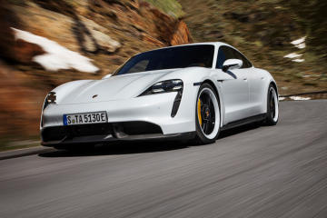

 The new Taycan GTS and Taycan GTS Sport Turismo charge the Porsche electric driving experience with even more intense emotion. The Taycan is the pure expression of a Porsche electric sports car. Striking proportions, timeless and instantly recognizable design, and a perfect blend of performance with everyday usability. The Taycan Cross Turismo embraces your lifestyle, with an enlarged rear luggage compartment and even more spacious interior. Its bold capability is further highlighted by the characteristic accents of the Off-road Design Package. Timeless design and generous space. Peerless performance and everyday versatility. Engaging dynamics and exceptional comfort. The new Taycan GTS Sport Turismo effortlessly combines elegance and practicality with no compromises.
| Harmony for Humanity: Daniel Pearl World Music Concert |
| Porsche 911 |
| Porsche Tycan Turbo S |
| Porsche Tycan 4s |
| Porsche Tycan Turbo |